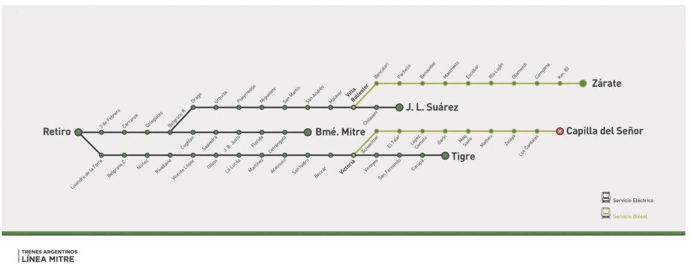
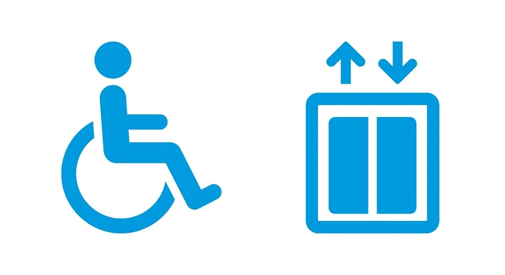

Ramal Bartolomé Mitre
Línea Mitre de trenes
El Ramal Bartolomé Mitre conecta la Terminal de Retiro con el barrio de Villa del Parque y la estación terminal homónima, atravesando los barrios de Palermo, Villa Crespo, Chacarita y Paternal. Cumple una función esencial como nexo entre el centro de Buenos Aires y las zonas residenciales del oeste de la ciudad, sirviendo a miles de pasajeros diariamente.
Destinos principales

El ramal conecta de manera directa el centro neurálgico de Buenos Aires con barrios del oeste de la ciudad. Desde Retiro, los pasajeros acceden a la estación Palermo (conexión con el Ferrocarril San Martín), continúan por Villa Crespo, tienen combinación en Chacarita (Línea B de subte), y finalizan su recorrido en Bartolomé Mitre con acceso a múltiples líneas de colectivo de la Red SUBE.
Frecuencia y dinámica del viaje
Los servicios operan con un cronograma programado con frecuencias de entre 8 y 20 minutos dependiendo de la franja horaria. En horas pico (mañana y tarde) la frecuencia aumenta para satisfacer la alta demanda de pasajeros.
Horarios y Frecuencias Operativas
Programación estimada del servicio Ramal Bartolomé Mitre
| Franja horaria | Tipo | Frec. pico | Frec. valle | Destino |
|---|---|---|---|---|
| 05:00 – 09:00 | Pico | 8 min | — | Retiro / B. Mitre |
| 09:00 – 17:00 | Valle | — | 15 min | Retiro / B. Mitre |
| 17:00 – 21:00 | Pico | 8 min | — | Retiro / B. Mitre |
| 21:00 – 00:00 | Nocturno | — | 20 min | Retiro / B. Mitre |
* Los horarios pueden variar por mantenimiento, feriados o condiciones operativas. Consulte actualizaciones en tiempo real.
Accesibilidad
Movilidad Reducida (PMR)
Todas nuestras installations cuentan con rampas, ascensores y personal capacitado para asistencia. Estaciones con acceso universal: Retiro, Chacarita y B. Mitre.
Conexiones Automotor
Acceso directo a Terminal de Ómnibus de Retiro. En Bartolomé Mitre hay conexión con líneas 15, 24, 57, 65, 71 y 168 de la Red SUBE.
Estacionamiento
Playa de estacionamiento disponible en Estación Bartolomé Mitre. Tarifa diferencial para usuarios con SUBE activa. Capacidad: 120 vehículos.
